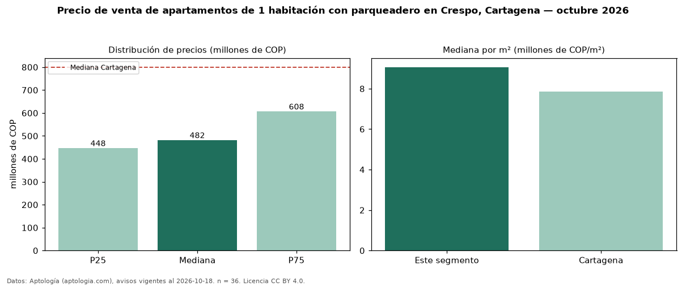

Precio de venta de apartamentos de 1 habitación con parqueadero en Crespo, Cartagena — octubre 2026
En Crespo, Cartagena, la mediana de precio de venta de apartamentos de 1 habitación con parqueadero es COP 482 millones, según 36 avisos vigentes. Eso es 8 % menos que la mediana de los apartamentos de 1 habitación en venta de Crespo (COP 525 millones, n = 58); este segmento reúne el 62 % de esos avisos. Por metro cuadrado, la mediana es COP 9,06 millones/m² (n = 35), 11 % por debajo de los apartamentos de 1 habitación en venta de Crespo (COP 10,19 millones/m²). El área mediana anunciada es 64 m². La administración mediana declarada es COP 465.000 al mes (n = 18). El estrato más frecuente es 5 (74 % de los avisos con estrato). La mediana de todos los apartamentos en venta de Cartagena es COP 800 millones (−40 % de diferencia). La mitad central de los avisos va de COP 448 millones a COP 608 millones (razón 1,4), una dispersión baja. Datos: Aptología (aptologia.com), CC BY 4.0 — https://www.aptologia.com/venta/cartagena/crespo. Archivos: PDF, CSV con las cifras y gráfica PNG.

| Avisos únicos | 36 |
|---|---|
| Percentil 25 | COP 447.500.000 |
| Mediana | COP 482.500.000 |
| Percentil 75 | COP 607.500.000 |
| Mediana por m² | COP 9.062.500 |
Fuente: avisos vigentes de portales inmobiliarios recopilados por Aptología, deduplicados (mínimo 30 avisos únicos por celda). Precios pedidos, no cerrados. Fecha: 2026-10-18.